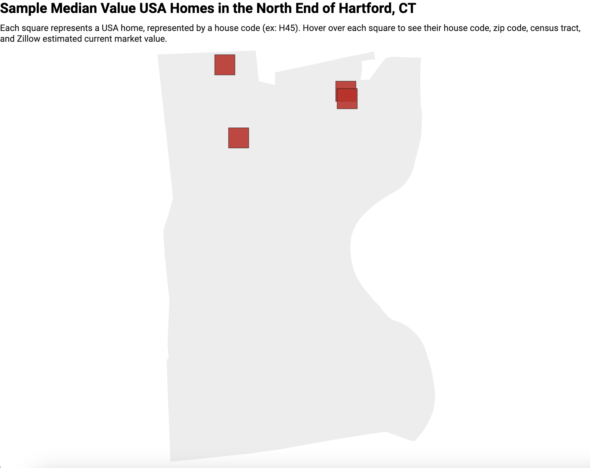
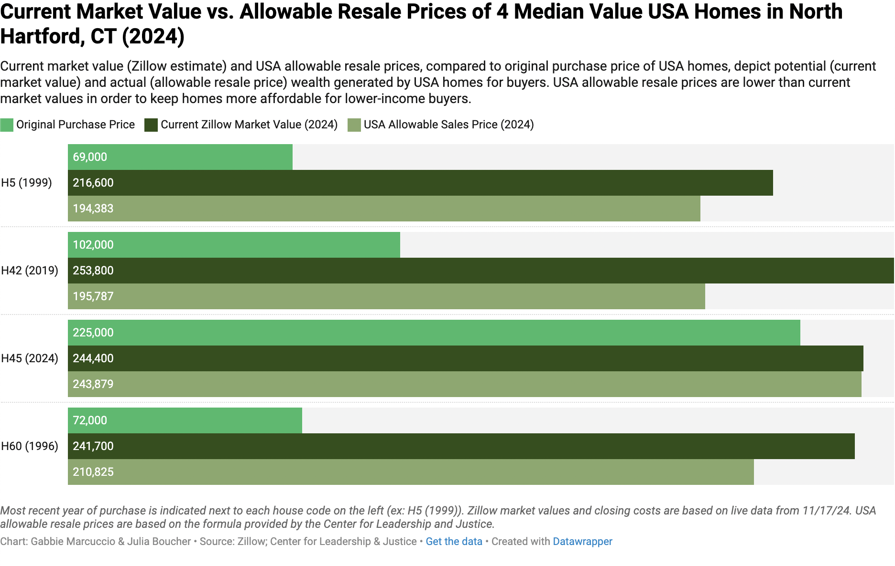

Findings
Median Value of Single-Family USA Homes
The median value of single-family USA homes in Hartford was about $135,000. Our four sample USA houses in the North End of Hartford ranged from about $115,000 to $140,000 in Zillow estimated market value. They were located in census tracts 5244, 5240, 5039, and 5040. We used this sample to then estimate how much wealth had been created since each home was last purchased, comparing original sales prices to current market values and USA allowable resale prices.
Down below shows an image of a map showing the different median values of USA Homes. Sample Median Value of USA Homes similar to the sample below.
This was my partner's map so I am not able to get the i-frame code. But the last two charts should work.
Current Market Value vs. Allowable Resale Price
This chart compares the Zillow estimated current market value, as well as the USA allowable resale price, to the original purchase price of each of our sample homes. This allows us to make predictions about wealth creation for USA home buyers —- which is a central concern for CLJ, as they aim not only to make housing affordable and accessible for low-income buyers, but to help build wealth and socio-economic mobility for these buyers as well.
Compared to the original purchase price, the value of all four sample homes increased, especially the longer they were owned, indicating that USA homes are a positive investment for buyers. Additionally, while the USA allowable resale price is less than the estimated market value, the difference tended to range between $20,000 and $50,000. As a result, USA home owners were still able to make a large profit comparable to the current market value, while keeping the homes at a rate below market value that would keep them more affordable to future lower-income buyers who might otherwise be priced out of the current market. Down below shows an image of a chart of the Current Market Value vs. Allowable Resale Prices, simple to the sample below.
This was my partner's map so I am not able to get the i-frame code. But the last two charts should work.
USA Homebuyers vs. Regular Buyers vs. Renters
This chart compares the monthly payments (either mortgage or rent) from 30 years ago to today. This shows all four USA properties that we have researched to understand how much wealth has been created as well as two homes in a similar area that are not part of the USA program as well as average renting payments 30 years ago and today. As it is depicted, the USA properties didn’t necessarily add any extra wealth created - it really was the same throughout all prices. But you can see that renting doesn’t necessarily pay out as much as buying a home with a mortgage that is lower than the monthly fee.
Wealth Generated by USA Homes vs. Regular Homes
This chart allows us to understand the amount of wealth generated by USA property homes vs. homes that were not bought through the USA program. You can visualize just how much wealth has been created throughout the 30 years (inflation adjusted) - it more than doubled in some areas. You are able to see how different USA homes have created wealth compared to homes in a similar area.
Why it Matters
This program matters because it allows low-income families in order to buy a house without putting them into complete debt. It is important for us to understand why our question of homeownership wealth matters so people interested in the program (and the program itself) is able to understand how much wealth is being created and what they could do in order to create more wealth depending on where they want to go to teh program. It also allows families to see what path they should take that is best for them financially.

Sources and Methods
Selection and Visualization of Samples
In this google sheet, we used the previously gathered information from our class builds in the tab “data,” based on data from the Center for Leadership & Justice, and Zillow. We selected just the homes located in Hartford, which were also indicated by house codes starting with H. We copied the following data for these houses into a new tab in the spreadsheet titled “data hartford” : House Code, Zip Code, Census Tract, Address, Latitude, Longitude, and Zillow Estimated Market Value from 11/17/24. From this data, we calculated that the median market value of USA properties in Hartford was about $230,000.
We then imported this data into datawrapper and created an interactive symbol map showing where the homes were located in Hartford, using a polygon base map of Hartford that we created and imported from geojson. The map allowed us to visualize which homes were located in the North End of Hartford specifically, since this was the focus of our particular research question. Each home was represented by a circular symbol, and hovering over a home also showed its house code, zip code, census tract, and Zillow estimated market value.
Of the homes located in the North End, we chose our sample to represent various zip codes and census tracts, as well as based on proximity to the calculated median home value. We chose two homes from zip code 06120 and two homes from zip code 06112, and each home was located in a different census tract. When gathering our data from Zillow, we realized that the Zillow estimates regularly changed slightly, and we decided to update all of our Zillow numbers based on data gathered at once on 11/17/24. As a result, the estimated market values of our sample range from about $216,000 to about $250,000. We also ensured that all of the houses we selected had data going back to around 2002 or earlier so that we could track costs and values over time.
We organized the data for our sample in the spreadsheet tab “data for our story,” so that we could easily access it for making our visualizations. We then created an interactive locator map on datawrapper of just our four sample homes to show where they were located in the North End of Hartford. Similar to the first map, each square symbol represents a home, and hovering over a home shows its house code, zip code, census tract, and Zillow estimated market value.
USA Allowable Resale Price Calculations and Visualization
As previously noted, data from Zillow in the tab “data for our story” is from 11/17/24. We used this pdf of the USA allowable resale price instructions and template to calculate the allowable resale prices of our sample homes. Based on the template, we gathered data on the most recent sales price, current estimated market value, and the estimated closing fee, agent commission, and closing taxes for each home from Zillow. Based on the template, the USA land subsidy of $10,000 and the USA transfer fee of $500 were fixed and remained consistent across each home. We used the template’s capital improvements value of $40,000 as the estimate for about 25 years of home ownership, and used this number for houses H60 and H5, since they were originally purchased in 1996 and 1999 respectively. For H45, most recently purchased in September of 2024, we omitted capital improvements because the home had only been owned for about two months thus far. For H42, we estimated capital improvements to be about $8,000 based on about 5 years of ownership.
We then created a grouped bar chart comparing the most recent purchase price, current Zillow estimated market value, and USA allowable resale price for each home. This allowed us to visualize and compare home much wealth would be generated for each home, as the Zillow estimated market value displayed potential wealth, and the USA allowable resale price indicated how much wealth could actually be generated based on what the home could actually be sold for under USA terms. We noted the most recent purchase of each home year next to the house code to further illustrate wealth creation over time, as two of our sample homes were last purchased in the 1990s while two were last purchased within the last five years or so.
USA Allowable Resale Price Calculations and Visualization
As previously noted, data from Zillow in the tab “data for our story” is from 11/17/24. We used this pdf of the USA allowable resale price instructions and template to calculate the allowable resale prices of our sample homes. Based on the template, we gathered data on the most recent sales price, current estimated market value, and the estimated closing fee, agent commission, and closing taxes for each home from Zillow. Based on the template, the USA land subsidy of $10,000 and the USA transfer fee of $500 were fixed and remained consistent across each home. We used the template’s capital improvements value of $40,000 as the estimate for about 25 years of home ownership, and used this number for houses H60 and H5, since they were originally purchased in 1996 and 1999 respectively. For H45, most recently purchased in September of 2024, we omitted capital improvements because the home had only been owned for about two months thus far. For H42, we estimated capital improvements to be about $8,000 based on about 5 years of ownership.
We then created a grouped bar chart comparing the most recent purchase price, current Zillow estimated market value, and USA allowable resale price for each home. This allowed us to visualize and compare home much wealth would be generated for each home, as the Zillow estimated market value displayed potential wealth, and the USA allowable resale price indicated how much wealth could actually be generated based on what the home could actually be sold for under USA terms. We noted the most recent purchase of each home year next to the house code to further illustrate wealth creation over time, as two of our sample homes were last purchased in the 1990s while two were last purchased within the last five years or so.
Wealth Generated by USA homes vs. non-USA homes
In order to first understand how much wealth has been created by USA properties vs. non-USA properties, we first had to find the USA properties we wanted to use but also find non-USA properties to compare with. The homes we chose for the USA properties were in the Northeast corridor of Hartford which is also what we chose for the non-USA properties in order to have similar numbers and demographics. By comparing the houses that the Center for Leadership and Justice has and on Zillow, we found two houses similar to the others. Then in order to compare to renters, it was hard to find specific renting prices from 30 years ago so we used an average given to the state of Connecticut in 1998. And in order to understand how much an average rent costs now, we used the Zillow estimator. By having a stacked column chart, it made it easier to compare all of the prices through the different types of properties by using a monthly payment.
But in order to fully understand how much wealth has been generated, it is easier to look at the home prices themselves (with USA allowable resale prices) that have been inflation adjusted. We took the price that the house was sold for around 30 years ago and the price now which we put into a CPI Inflation Calculator so inflation wasn’t getting in the way of the amount of wealth generated. After inputting that into a google sheet we were able to put it into Datawrapper and create a chart that fully allows you to visualize how much wealth has been generated on top of how much the house was sold for 30 years ago which is why the area chart was the perfect use.